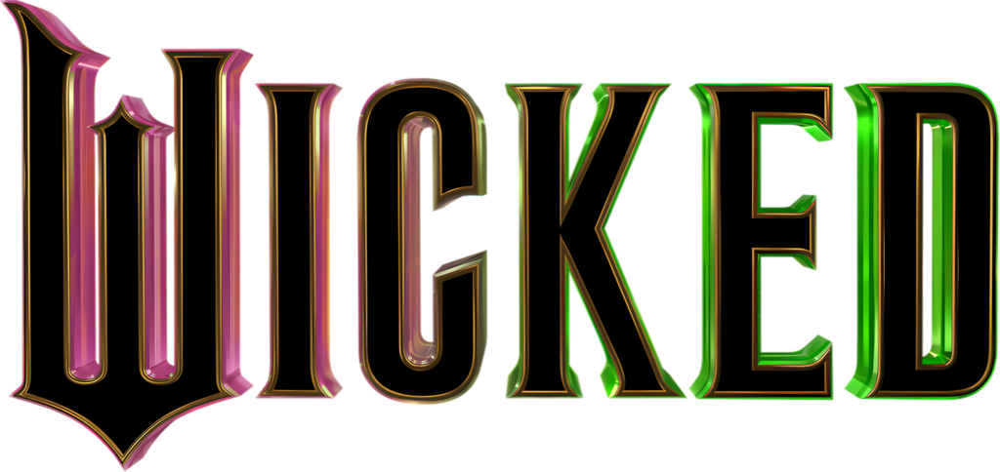
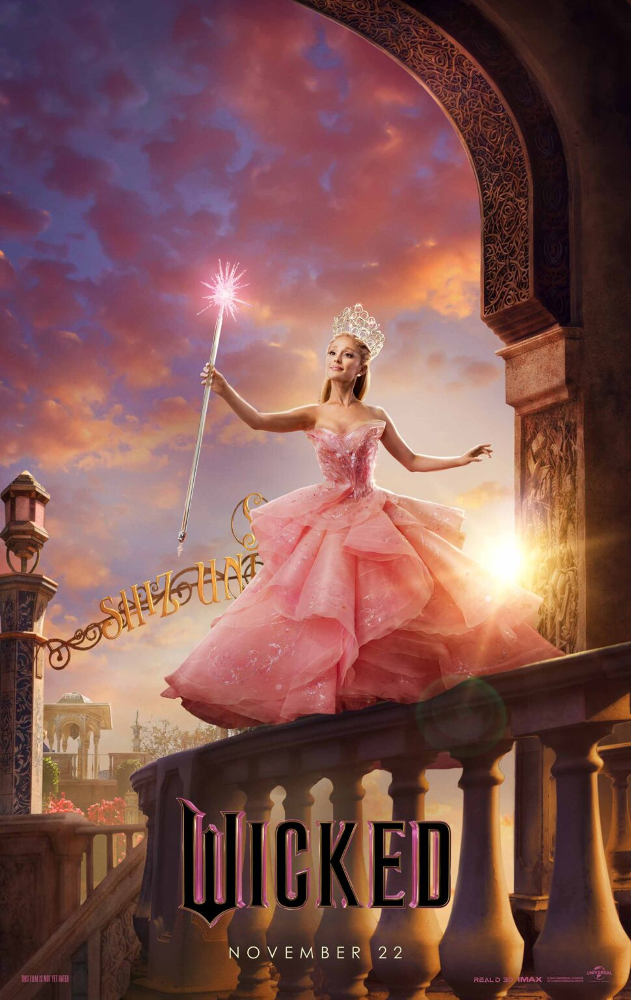

Glinda Upland, also known as Glinda the Good, and formerly referred to as Galinda is a popular young woman, gilded by privilege and ambition, who has yet to discover her true heart. She meets Elphaba at Shiz University. At first, both don't get along, considering how different they are from each other. But overtime, they learn their differences is what makes them great friends.